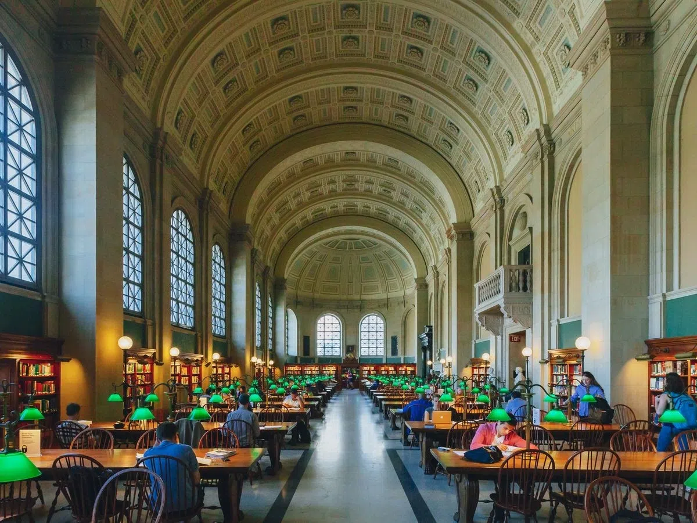
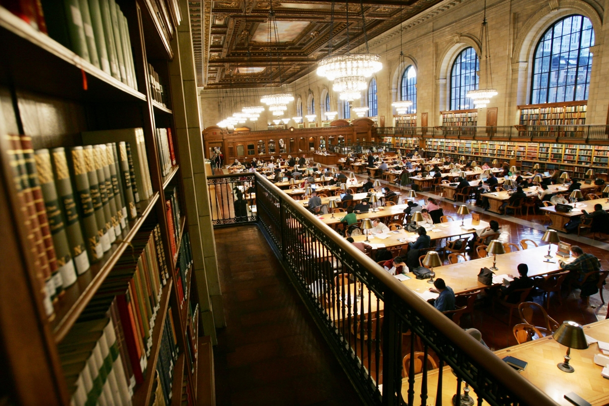
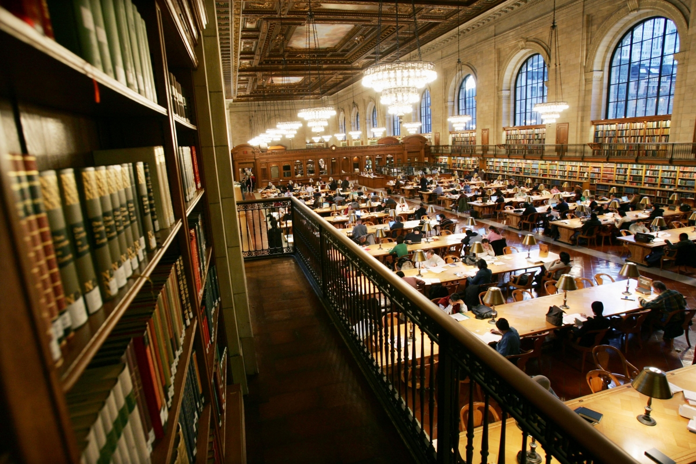

Harvard Library
Oleh Jauharah Kusumastuti
Harvard University Library berada di Cambridge, MA, USA yang didirikan pada tahun 1638. Perpustakaan Harvard merupakan perpustakaaan dengan sistem tertua
di Amerika Serikat. Perpustakaan harvard memiliki 28 perpustakaan, 700 staf ahli, 6 juta publikasi dan digitalisasi , 20 juta buku, 1 juta peta dan kumpulan data spasial, serta 400 juta koleksi langka termasuk surat, fotografi, dan manuskrip.
Perpustakaan Harvard mempunyai koleksi terbesar ketiga di Amerika Serikat, setelah Perpustakaan Kongres dan Perpustakaan Umum Boston. Berdasarkan jumlah barang yang dimiliki, perpustakaan ini merupakan perpustakaan terbesar kelima di Amerika Serikat. Selain itu, Harvard adalah bagian dari Konsorsium Koleksi Penelitian dan Pelestarian (ReCAP) bersama dengan Perpustakaan Columbia, Perpustakaan Universitas Princeton dan Perpustakaan Umum New York, dan Konfederasi Perpustakaan Ivy Plus, yang menyediakan lebih dari 90 juta buku bagi pengguna perpustakaan.
 

Harry Elkins Widener Memorial Library
Perpustakaan Harry Elkins Widener Memorial adalah perpustakaan andalan Universitas Harvard. Dibangun dengan hadiah dari Eleanor Elkins Widener, perpustakaan ini merupakan peringatan untuk putranya, Harry, Angkatan 1907. Harry adalah seorang bibliofil muda yang antusias yang tewas di kapal Titanic.
Sudah menjadi rencana Harry untuk menyumbangkan koleksi pribadinya ke Universitas setelah itu memberikan alternatif yang sesuai untuk perpustakaan yang ketinggalan jaman dan tidak memadai yang saat itu terletak di Gore Hall. Nyonya Widener mewujudkan impian putranya dengan membangun fasilitas berukuran monumental, dengan rak sepanjang lebih dari 50 mil dan kapasitas untuk menampung lebih dari tiga juta volume.
Perpustakaan dibuka pada tahun 1915, namun koleksi Harvard terus bertambah dengan kecepatan yang luar biasa. Pada akhir tahun 1930-an, rak Widener sudah mencapai kapasitasnya. Tempat yang tersedia sangat mahal bagi staf, pelanggan, dan juga buku, sehingga pemerintah memulai proses desentralisasi yang panjang.
Seiring berjalannya waktu, Harvard membangun beberapa perpustakaan baru untuk menampung koleksi-koleksinya yang semakin terspesialisasi. Dengan mendistribusikan kembali buku-buku ke perpustakaan-perpustakaan baru, ruang di Widener terbuka. Namun, secara bertahap diberikan kepada staf yang terus bertambah yang dipekerjakan untuk mengurus koleksi.
Selain tantangan fisik yang terkait dengan perumahan dan pemeliharaan koleksi yang terus bertambah, abad ke-20 juga menyaksikan kemajuan teknologi yang memengaruhi Widener, mulai dari kabel listrik, katalog kartu terkomputerisasi, hingga stasiun kerja penelitian yang canggih.
Perpustakaan Wildener menyambut milenium baru di tengah perubahan terbesarnya sejak dibuka pada tahun 1915. Dari tahun 1999 hingga 2004, gedung ini mengalami renovasi besar-besaran untuk menjamin pelestarian dan keamanan koleksi dalam jangka panjang, serta untuk meningkatkan ruang pengguna.
Untuk informasi lebih mendalam tentang sejarah Widener, lihat: History of the Harry Elkins Widener Memorial Collection